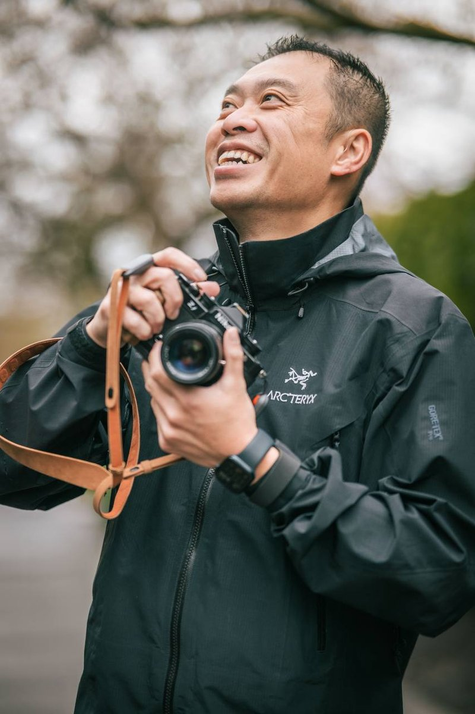

About
The Photographer
I was born in China, but Canada is where I grew up — mainly Vancouver and Victoria. There's something about the West Coast rain forest, the way light filters through the cedars after a storm, the mist rising off the ocean at Tofino. Those are the scenes that caught my eye and never let go.
I've been shooting for 17 years now. What started as a way to remember places I explored slowly became a deep need to return — to catch the light at dawn, to stand in front of a waterfall after the rain, to watch the tide pools fill at sunset. The pre-dawn alarms, the cold mornings, the waiting — that's what pulls me in. The landscape doesn't care if you're there, but it lets you in if you're patient.
I shoot with a Nikon Z 9. My heart belongs to the forests, waterfalls, and seascapes of the coast — that's where I feel most at home. I keep my post-processing honest. No composite skies, no added mist. What you see is what the light gave me.
Equipment
Gear I Trust
Cameras
- Nikon Z 9 — Primary
- Nikon D810 — Secondary / backup
Lenses
- NIKKOR Z 14-24mm f/2.8 S
- NIKKOR Z 24-70mm f/2.8 S
- NIKKOR Z 70-200mm f/2.8 VR S
Support
- Gitzo GT3543LS Tripod
- Really Right Stuff BH-55 Head
- Lee Filters SW150